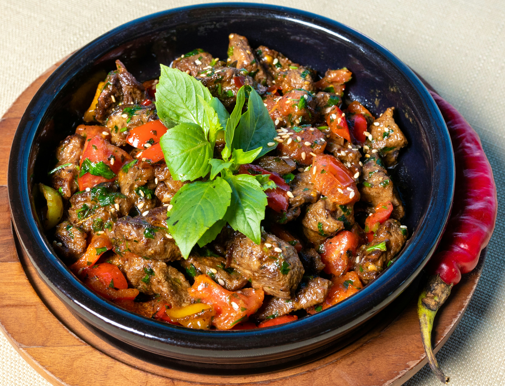

Home
Hawaiian Beef Stew Recipe

Hawaiian-Style Beef Stew
This Hawaiian-style beef stew might be the best beef stew recipe you'll
ever make, with a level of umami that's off the charts.
Deeply browned beef gets a long slow simmer in a thick savory sauce, and
you'll want to serve it over rice to capture all of that goodness. This
recipe was adapted from “Grandpa Clarence's Hawaii-Style Beef Stew” from
Jess at Plays Well with Butter.
ingredients
- 2 1/2 pounds well-marbled beef chuck
- 2 teaspoons kosher salt
- 1/4 cup all-purpose flour
- 3 tablespoons olive oil
- 2 yellow onions, cut into 1-inch pieces
- 3 tablespoons tomato paste
- 1 cup tomato sauce, crushed tomatoes, or tomato puree
- 4 cups beef bone broth
- 2 tablespoons Worcestershire sauce
- 1/2 cup soy sauce
- 1 teaspoon freshly ground black pepper
- 1 pinch cayenne pepper
- 4 carrots, peeled and cut into 1-inch pieces
- 3 stalks celery, sliced
- 3 large Yukon Gold potatoes, peeled, and cut into 2-inch pieces
Steps
-
Place beef on a cutting board, and cut into uniform 1 1/2-inch pieces.
Season beef directly on the cutting board; sprinkle with salt and 2
tablespoons flour, and toss until thoroughly and evenly coated.
-
Add vegetable oil to a heavy bottomed stew pot, and set over high heat.
Working in 2 or 3 batches so that beef is in a single, uncrowded layer,
brown beef pieces deeply on at least 2 sides; transfer into a bowl and
set aside. Reduce heat to medium-high if beef is browning too quickly or
pan seems too hot.
-
Remove the last batch of browned beef to the bowl, reduce heat to
medium-high, and transfer in onions. Cook, stirring for a few minutes
until they just start to turn translucent. Add tomato paste, and cook
and stir until tomato paste begins to brown on the edges of onion, about
4 minutes.
-
Sprinkle in remaining 2 tablespoons flour, and cook, stirring, for about
2 minutes. Transfer in tomato sauce and beef broth, and stir to combine.
Add Worcestershire sauce and soy sauce, and bring stew to a boil,
stirring occasionally.
-
Return browned beef pieces and all accumulated juices to the pot and
stir to combine. Reduce heat to low. Cover tightly, and simmer gently
for 1 hour.
-
Uncover, and stir in black pepper, cayenne, carrots, celery, and
potatoes. Cover again and simmer on low for 1 hour.
-
Remove the lid, and simmer uncovered until sauce reduces slightly and
thickens, and meat is very tender, about 1 hour more. Taste for
seasoning and adjust if need be. Serve with rice.